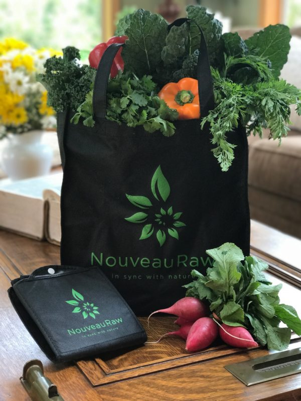

How to Select Fresh Produce
When it comes to purchasing produce, there is a lot of sniffing, poking, and shaking involved. That’s because we want to select the freshest whole-istic foods as possible. Here are some tips on choosing the best produce at the market, getting the most for your money, and most importantly, peak nutrition. To learn more about the benefits of eating in season click (
here).
Living in tune with nature’s rhythm makes us more aware and appreciative of the beauty around us.
Seasonal food is fresher, tastier, and more nutritious than food consumed out of season. Plants get their nourishment from the sun and soil, which means it will have higher levels of antioxidants that prevent or slow oxidative damage throughout the body. If at all possible, shop at your local farmer’s markets. They are fresher since they don’t require long distances for transport. Use the list below as a guide, but never be afraid to ask either the farmer or produce worker for a sample of any produce item that you are looking to purchase. They are usually always very willing to tickle your taste buds.
How to Select Fresh Produce
Apple
- In season – late summer through fall (cold storage until spring)
- Pick up the apple and gently press a small area of the fruit’s skin. It should be firm to the touch.
- Avoid apples that are noticeably soft, discolored, or indent when you lightly press the skin.
- A fresh, high-quality apple should have a pleasant aroma.
- Did you know that most apples sold in grocery stores are up to a year old, preserved by a controlled environment?
Apricots
- In season – late spring through early summer
- Apricots range in color from yellow to deep orange, often with red or rosy touches.
- When selecting apricots, the flesh should yield to gentle pressure when held in the palm of your hand, and the fruit should have a bright, ripe aroma.
- Avoid those that are bruised, soft, or mushy.
Artichokes
- In season – spring and again early fall
- When selecting artichokes, look for tightly-packed leaves; splayed leaves are a sign it is less than fresh.
- They should feel solid and heavy; artichokes get lighter as they get older.
- If you enjoy the leaves, small artichokes are more tender and sweeter.
- If you enjoy the hearts, choose larger artichokes.
Asparagus
- In season – spring
- Fresh asparagus stalks are firm, straight, and smooth.
- They should be a vibrant green color with a small amount of white at the bottom of the spear.
- A dull green hue and wrinkles in the stems are an indication of old age.
- Asparagus tips should be tightly-closed and compact. Look for purple highlights, and make sure the tips are not soft and mushy.
Avocados
- In season – spring, summer, winter
- The best way to tell if it is ripe and ready for immediate use is to squeeze the fruit in the palm of your hand gently.
- Ripe, ready-to-eat fruit will be firm yet will yield to gentle pressure.
- Avoid fruit with dark blemishes on the skin or over-soft fruit.
- Pop the stem button off, and if it is a fresh green color, it should be ripe.
- To speed up the process of ripening avocados, place the fruit in a plain brown paper bag with an apple and store at room temperature (65-75°F) until ready to eat (usually two to five days).
- Including an apple in the bag accelerates the process because they give off natural ethylene gas.
Bananas
- In season – year-round
- Selecting bananas are based on your usage time frame.
- For immediate use, select bananas that are yellow with brown spots.
- For future use, select bananas that are still slightly but not overly green.
- Pick bananas that are bright in color, full and plump, avoiding those with bruises.
- A dull, gray color indicates they have been either chilled or overheated during storage.
Beets
- In season – year-round
- Select beets that are small (1.5 to 2 inches in diameter) and firm with deep maroon coloring, unblemished skin, and bright green leaves with no sign of wilting. The taproot should still be attached.
- Smaller beets will be sweeter and more tender.
Berries
- In season – spring and summer
- Blackberries: June through August.
- Blueberries: late May through October.
- Boysenberries: late June through early August.
- Raspberries: May through September.
- Strawberries: April through June.
- Select berries that are plump, tender, and bright in color.
- Avoid containers that are damp or stained, which might be signs of overripe fruit.
- Remove and discard any moldy or mushy berries to keep mold from spreading.
Broccoli
- In season – year-round but best in fall and winter
- Select broccoli heads with tight, green florets and firm stalks.
- The broccoli should feel heavy for its size.
- The cut ends of the stalks should be fresh and moist looking.
- Avoid broccoli with dried out or browning stem ends or yellowing florets.
Broccoli Rabe
- In season – early spring
- Select firm small-stemmed specimens with tightly-closed dark green florets and leaves that aren’t wilted.
- Yellow leaves and flowers is a sign that the broccoli rabe is past its prime.
Brussels Sprouts
- In season – late fall and winter
- Look for bright green heads that are firm and heavy for their size.
- The leaves should be tightly packed.
- Avoid Brussels sprouts with yellowing leaves, a sign of age, or black spots, which could indicate fungus.
- Smaller Brussels sprouts are usually sweeter and more tender than larger ones.
Cabbage
- In season – year-round but best in late fall and winter
- Select a tight, compact head that feels heavy for its size.
- It should look crisp and fresh, with few loose leaves.
- Leafy varieties should be green, with stems that are firm, not limp.
Carrots
- In season – year-round
- Look for firm carrots with bright orange color and smooth skin.
- Avoid carrots if they are limp or black near the tops; they’re not fresh.
- Choose medium-sized ones that taper at the ends. Thicker ones may be tough.
Cauliflower
- In season – fall
- Look for cauliflower that has a uniform color with densely-packed florets that are free of blemishes, browning, or wet spots.
- The leaves should be fresh and vibrant, which is a sign that the cauliflower was recently harvested.
- The cauliflower head should feel heavy in your hand.
- If the cauliflower has a strong smell, it’s past its prime and will probably have an unpleasant bitter taste.
Celery
- In season – August
- Look for bright green leaves with no brown spots or yellowing. Brown or yellow on the leaves indicates that the celery is a bit older.
- The stalks should be green and crisp.
Celery root/Celeriac
- In season – fall and winter
- Look for celery roots that feel heavy for their size.
- If any greenery is attached to the top of the root, they should be fresh looking and not dried out, slimy, or wilted.
- Celery root is notoriously difficult to peel because of the hairy peel and its many nooks and crannies, so look for ones with as smooth of an exterior as possible.
- Freshly harvested celery root tends to be more tender and easier to peel.
Cherries
- In season – late spring and summer
- Look for cherries with a deep, dark saturation of color.
- If possible, select cherries that still have the stem intact which indicates freshness.
- Cherries should be firm.
Citrus
- In season –
- Lemons: winter and spring
- Limes: late summer and fall
- Grapefruit: winter and spring
- Mandarins: winter
- Navel: winter and spring
- Pommelos: winter
- Tangerines: winter
- Valencia: spring and summer
- Select oranges that are firm, smooth, thin-skinned, full-colored, and heavy for their size.
- Color is not a good indicator of quality; some oranges are dyed.
- Brown surface patches do not mean the orange is unripe or spoiled, but rather that it was grown in a warm and usually humid region.
- Avoid oranges that are soft or moldy.
Corn on the Cob
- In season – summer
- Select corn with bright green husks.
- Feel the kernels through the husks or tear back the husk to peek at the corn. Be careful though, tearing the husk shortens the shelf life of the corn.
- Select ears with kernels in tightly-packed rows and moist, pale yellow silk peeking out of the ear.
Cucumber
- In season – summer
- Select firm cucumbers, without blemishes or soft spots, which can indicate they have started to rot.
- They should be dark green without any yellow spots.
- Avoid any that have wrinkles, which shows they have been stored for too long or at higher temperatures and have lost their moisture.
Eggplant
- In season – summer and early fall
- Look for shiny and smooth skin that has even consistency throughout the eggplant.
- Dull garish skin is a sign of poor storage or downright low quality.
- Wrinkles are a sign that the eggplant is old and was harvested a long time ago.
- The stem end should be green.
Fennel
- In season – fall through spring
- Look for small to medium-sized white bulbs that are heavy and firm.
- They should have bright green feathery fronds with no signs of flower heads (a sign that the fennel has passed its optimum maturity.)
- Avoid bulbs that have large moist spots or appear shriveled and dried out.
- Bulbs and stalks should be free of cracks, splits, and any discoloration or bruising.
Figs
- In season – summer and fall
- Select figs that are clean and dry, with smooth, unbroken skin.
- The fruit should be soft and yielding to the touch, but not mushy.
- If it smells slightly sour, it has already begun to ferment. When figs get beyond their prime, they start to collapse inward and lose their round shape.
Garlic
- In season – summer and fall (stored year-round)
- Select garlic bulbs that are plump and compact with taut, unbroken skin.
- Avoid those with damp or soft spots. A heavy, firm bulb indicates that the garlic will be fresh and flavorful.
Ginger
- In season – fall
- Look for firm, heavy hands (rhizomes).
- Avoid any that look wrinkled or show signs of mold.
Green Beans and Peas
- In season – summer and early fall
- Look for small to medium-sized pods. Large pods have matured more and may be less tender and sweet.
- Avoid pods that are cracked or limp.
- A pod with good peas will make a snapping sound when you break it, and the peas inside should be small, bright green, tender, and sweet.
Grapes
- In season – late summer and early fall
- Select grapes that are plump and free of wrinkles.
- They should be firmly attached to the stem and not leaking any juice.
Green Onions
- In season – spring through fall
- Look for green onions with white to pale green bulbs.
- The tops should be bright green and about eight inches long.
- When selecting green onions, be sure to look for crisp, firm bulbs.
Kiwis
- In season – winter and into spring
- Whether green or gold kiwis, choose plump, fragrant fruit that yields to gentle pressure.
- Unripe fruit has a firm core and a tart, astringent taste.
Leafy Green
- In season – year-round
- Arugula: spring and fall
- Belgian Endive: fall and winter
- Bok Choy: fall through spring
- Chard (Swiss, Red, Rainbow): summer and fall
- Escarole: fall and winter
- Lettuce: summer
- Nettles: spring
- Radicchio: late summer through early spring
- Watercress: year-round
- Choose lettuce that is strong in color with no browning, yellowing, or wilting of leaves.
- Fresh lettuce should have crisp stems, and dark green to pale green leafy outer layers.
Leeks
- In season – fall through spring
- Select only crisp and fresh looking leeks.
- Fresh leeks have white bulbs without discoloration and dark green tops without wilting.
Mushrooms
- In season – cultivated, year-round
- Look for large, firm mushrooms. Skip those that appear slimy or overly-moist.
- Mushrooms bruise easily, so handle them with care.
- Before buying mushrooms, look at the underside to make sure the gills (the row of paper-thin tissue located under the caps) aren’t open, a sign that the mushrooms are past their prime. Choose those whose gills are lighter in color.
Onions
- In season – spring through fall (stored in winter)
- Select onions that are heavy in your hand and firm to the touch.
- If an onion is soft or has a potent odor, then it has passed its peak and will most likely give off an unpleasant flavor.
Parsnips
- In season – fall through spring
- Select small to moderate-sized roots that are about seven inches. Any larger and they become woody.
- Fresh parsnips are pale and evenly-colored.
- Look for firm and crisp ones just as you would with carrots.
Pears
- In season – fall
- For a ripe pear, press a finger gently into the top of the pear just where the stem joins the fruit. If it just starts to give, the fruit is ripe.
- Don’t buy pears that are soft anywhere else, as that indicates that they are overripe and the flesh will be mushy and mealy.
Peppers
- In season – summer and early fall
- Peppers should be well-shaped, firm, and glossy.
- Their skins should be taut and unwrinkled, and their stems fresh and green.
- Bell peppers are best when they are thick-walled and juicy, so they should feel heavy for their size.
- Avoid bell peppers with soft or sunken areas, slashes, or black spots.
- If a green bell pepper shows streaks of red, it will be slightly sweeter.
Persimmons
- In season – fall and early winter
- Whatever the variety, choose persimmons that have deep, saturated colors.
- If you’re looking for already ripe Hachiyas, you’ll often see some black staining on the skin; this is not a problem.
Plums and Pluots
- In season – summer
- To find a ripe plum, hold one in the palm of your hand. It should feel heavy, and there should be some give, particularly at the blossom end (opposite the stem end). If the plum is too soft, it’s probably overripe.
- Hard plums will soften (but not ripen to a sweeter taste) in a brown paper bag at room temperature within two days.
Pomegranates
- In season – fall
- Pomegranates do not ripen after it’s picked.
- Look for plump and round fruit with a rich, fresh color that is heavy for its size. A lighter weight pomegranate means the seeds contain little juice.
- It also should be free of cuts and blemishes.
- Avoid pomegranates with bumpy or wrinkled skin, or any with visible bruises.
Radishes
- In season – spring through fall
- Select radishes with crisp, firm roots, bright green leaves, and brightly colored bulbs.
- Avoid radishes with cracks or spots; these are indications of rottenness.
Sweet Potatoes
- In season – fall and winter
- Choose firm, smooth sweet potatoes without wrinkles, bruises, sprouts, or decay.
Squash
- In season –
- Delicata Squash: fall and early winter
- Pumpkins: fall
- Summer: summer
- Winter Squash: fall and winter
- Select squash that is heavy for its size and still has the stem intact.
- Each variety has its own color (or colors), but in general, choose squash that is rich and deep in color. A pale spot where the gourd rested on the ground is okay as long as it is not green.
- The skin should be dull and matte. Shiny skin indicates that the squash was picked too early.
Tomatoes
- In season – summer
- Choose firm, fresh-looking tomatoes.
- Avoid any with bruising, spots, or discoloration.
- Fresh tomatoes should have vibrant red, glossy outer skin with green tops.
Turnips
- In season – fall through spring
- Look for turnips that are firm, feel heavy for their size, and has a sweet smell.
- Larger ones tend to be woody and rough-tasting.
Zucchini or Yellow Squash
- In season – summer
- Select those with firm, glossy, tender skins that feel heavy.
- Avoid any zucchini with discoloration, bruising, or damage.
- Zucchini should be a dark green color.

I would like to take a moment to inject the importance of using reusable bags for your groceries. It is estimated that two million bags are tossed into a landfill in just one year. The effect of that is just horrific.
It is estimated to take between fifteen and a thousand years for the
average plastic bag to decompose, depending upon the type of environment. The EPA estimates only two percent of all plastic bags are recycled. The rest are stuck in landfills or floating around the oceans, often leaching toxins into the soil and water.
If you think paper bags are a better option, you should reconsider. The United States chops down fourteen million trees per year to make the pulp to produce paper bags.
If you would like to help save our little planet by reducing what ends up in our landfill you too can own a Nouveauraw bag, click (
here). Shameless plug. hehe Blessings, amie sue
© AmieSue.com